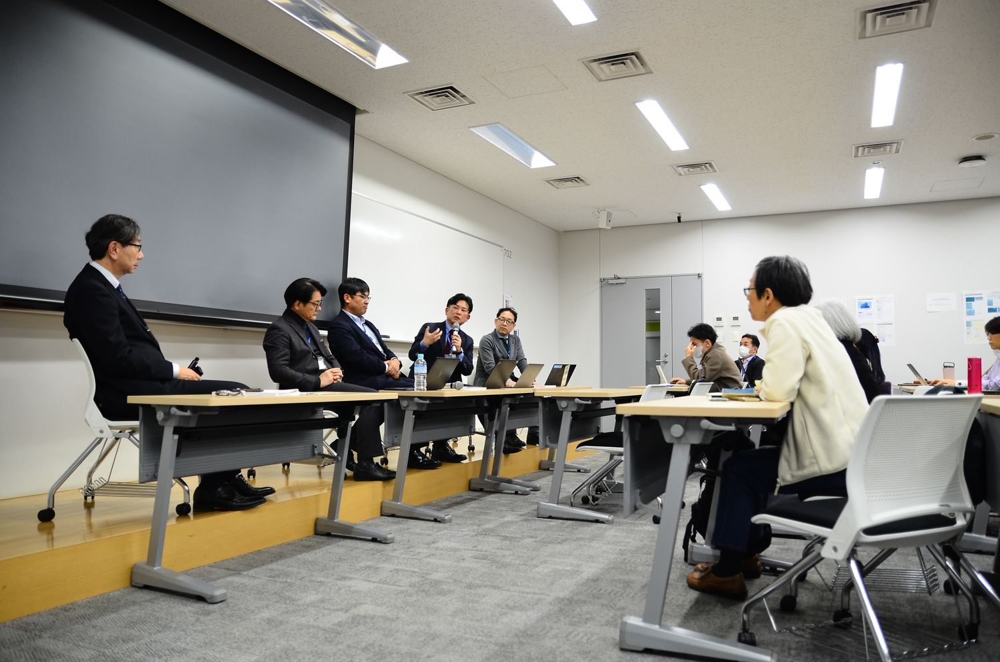
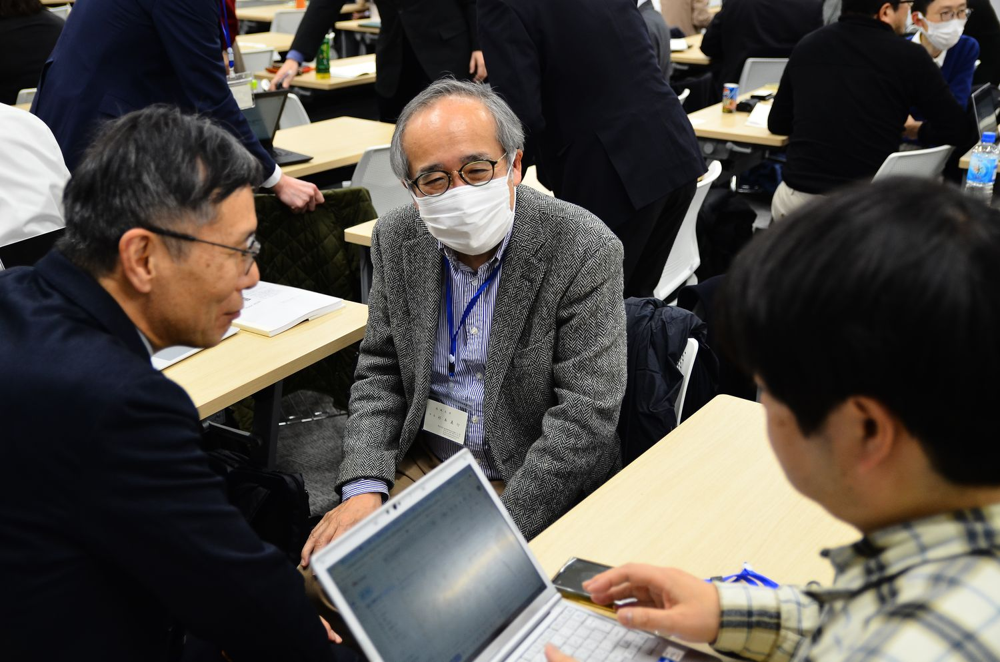
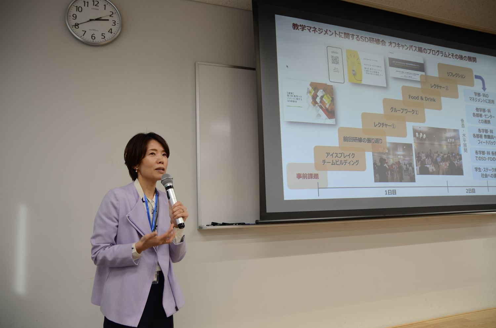
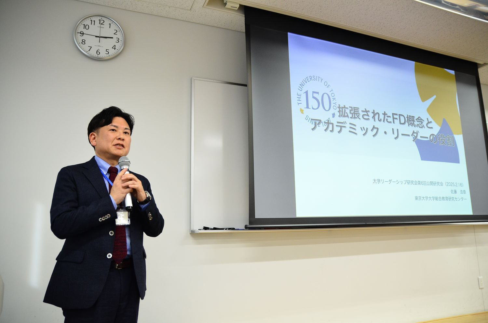
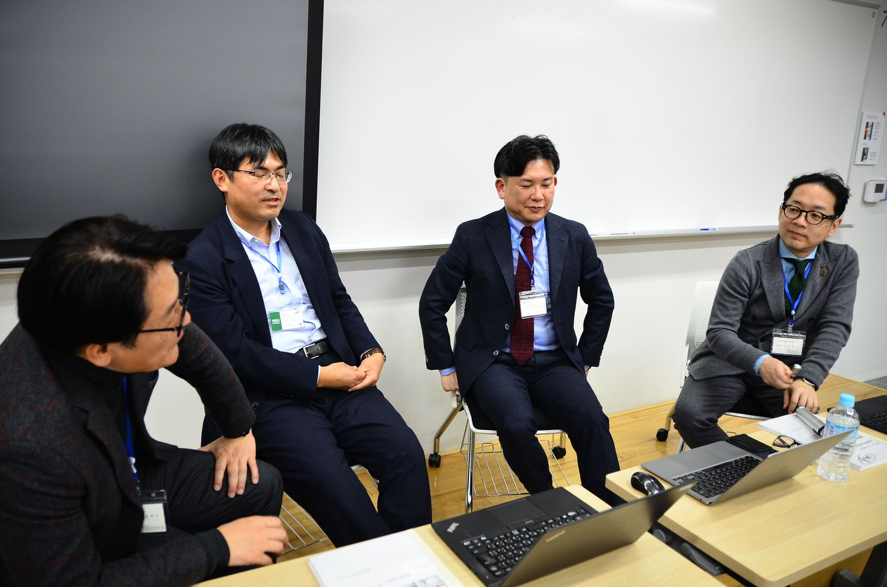

大学改革を推進する実践的リーダーシップ教学マネジメントの深化と組織変革
本研究会が2022年度から3年間にわたり科研費の支援を受けて実施してきた研究プロジェクトの総括として開催しました。全国の学部長・学長を対象とした調査の報告、ミドル育成の実践事例、そしてFD概念の拡張とアカデミック・リーダーの役割に関する基調講演を通じて、多角的な議論を行いました。



開催概要
| 日時 | 2025年2月16日（日） |
|---|---|
| 会場 | 共立女子大学 神田一橋キャンパス 2号館702教室 |
| 主催 | 大学リーダーシップ研究会 |
| 参加者 | 110名（一般参加99名／主催・事務局7名／登壇者4名） |
参加者数は、研究会が保有する第1〜9回の統合参加者データ（v13）にもとづく集計です。申込記録を基礎としているため、当日の実数とは若干の差がありえます。
登壇者とプログラム
- 報告石川 勝彦鳴門教育大学「全国調査 結果の報告：教学マネジメントを担っている学部長とは？」
- 報告山本 啓一北陸大学「ミドル教員の育成プログラムの提案」
- 報告渡辺 明日香共立女子短期大学 生活科学科長「大学単位で実施するトップ＆ミドル教職員研修の成果」
- 基調講演佐藤 浩章東京大学 大学総合教育研究センター 教授「拡張されたFD概念とアカデミック・リーダーの役割」
- パネルディスカッション大森 昭生・吉村 充功・佐藤 浩章・山本 啓一司会：成田 秀夫（桐蔭横浜大学）「リーダー研の3年間をふりかえって」
開催報告
以下は、当日の発言録をもとに、各登壇者の発言の要旨をまとめたものです。引用部分は発言録からの抜粋です。
開会挨拶と趣旨説明
佐藤 雄一（共立女子大学 学長）／山本 啓一（北陸大学）
会場校を代表して、共立女子大学の佐藤雄一学長から挨拶をいただきました。続いて山本が開会の挨拶をしました。本研究会は2018年に4名で始まり、2022年からは科研費の助成を受けて公開研究会を続けてきました。この3年間、研究会では学長のリーダーシップに加えてミドルのリーダーシップを取り上げ、教学マネジメントを進めるうえでトップとミドルがどう連携するか、ミドルをどう育成するかを議論してきました。山本は、今回をその総括と位置づけ、学部長を中心とするミドルの育成とFDとの関係を掘り下げると説明しました。
報告1 石川 勝彦
鳴門教育大学「全国調査 結果の報告：教学マネジメントを担っている学部長とは？」
石川氏は、学部長と学長を対象とした全国調査の結果を報告しました。2024年11月から12月に約800大学へ質問票を郵送し、学部長160票、学長83票を回収しました。学部長の多くは学位プログラム単位の教学マネジメントを重視していましたが、実行できているかについての回答はそれより低めでした。重要度の認識は学長指名の学部長や管理職経験の多い学部長で高く、実行度は国立より私立で高い傾向が見られました。専門性を重んじる考え方の強い学部長ほど、教学マネジメントを重視しない傾向もありました。石川氏は、学長が学部長に執行部への提案や情報共有を期待している点を、最も重要な結果に挙げました。
学長は上のマネージメントを期待しておりまして、学部からの提案・共有を求めていて、なんなら説得してくれてもいいぐらいにコミュニケーションを取りたいと思っていらっしゃる
石川 勝彦
報告2 山本 啓一
北陸大学「ミドル教員の育成プログラムの提案」
山本は、ミドルに求められる役割は大学によって大きく異なり、育成の目標とする人材像を一つに定めるのは難しいと述べました。そのうえで二つの実践を紹介しました。一つは2024年7月に本研究会が開いた研修会です。大学を超えて約40名が集まり、ジョン・コッターによるリーダーシップとマネジメントの区別を枠組みに、互いの経験を振り返りました。もう一つは共立女子大学で2年続けているFD・SDで、トップとミドル約30名が1泊2日の研修を行っています。渡辺氏の報告を受けて、山本は、ミドルの研修では個人の能力を高めることよりも、学内の関係性を変えることや、学外とのつながりをつくることが大切だとまとめました。
1人1人に頑張れというのだけじゃなくて、その関係性を変えていくというミドルの研修ってとっても大事
山本 啓一
報告3 渡辺 明日香
共立女子短期大学 生活科学科長「大学単位で実施するトップ＆ミドル教職員研修の成果」

渡辺氏は、研修に参加した立場から報告しました。渡辺氏は2021年4月から3年間学生部長を務め、現在は短期大学の生活科学科長です。共立女子大学では、2023年3月の第1回から当日までに、教学マネジメントに関する研修会を5回開いてきました。研修は、事前課題、アイスブレイクとチームビルディング、前回の振り返り、講義とグループワーク、最後のリフレクションで構成されています。渡辺氏は、オフキャンパスの1泊2日の研修によって、毎週の会議ではわかりにくい教員の人柄を知ることができ、学部や部署を超えた連携にもつながったと述べました。
なかなかそういうオフィシャルなところでは先生方のキャラというのが認識しにくいということで、オフキャンパスですごくコミュニケーションが非常に円滑になったなという印象がございます。
渡辺 明日香
基調講演 佐藤 浩章
東京大学 大学総合教育研究センター 教授「拡張されたFD概念とアカデミック・リーダーの役割」

佐藤教授は、愛媛大学と大阪大学でそれぞれ10年FDを担当し、2024年8月に東京大学へ移りました。講演の前半では、2022年の大学設置基準改正を取り上げました。この改正で、TAなどの指導補助者への研修が義務となり、それまで別の条文にあったFDとSDの規定が一つにまとめられました。佐藤教授は、その規定の対象が「教員及び事務職員等」となった点に注目し、授業の改善に限られていたFDの概念が、研究や管理運営を含む教職員の能力開発、すなわちアカデミック・デベロップメントへと拡張されたと解釈しました。そのうえで、大学の管理職がこの能力開発に責任を負うことになったと述べ、各大学でFDの定義を見直してはどうかと提案しました。
後半では、大学教員の特性と学問文化を論じました。佐藤教授は英国の研究を紹介し、大学教員は自律性を重んじ、権威に懐疑的で、内発的な関心で動く傾向があり、業績評価よりも同じ専門分野での評価などの「威信経済」がモチベーションになると説明しました。FD担当として各学部を回った経験から、学問分野ごとに振る舞いや価値観が違うことも紹介し、本研究会に登壇した学長も、それぞれの専門分野に根ざした方法でマネジメントをしていると指摘しました。最後に、学問文化は教学マネジメントの障壁にも突破口にもなりうると述べ、対立や不確実性を排除せずに受け入れ、そこから学ぶ力（アンチフラジャイル）がアカデミック・リーダーに必要な能力ではないかと述べました。
今日のテーマで言うとマネジメント能力も含めて、先ほど「ミドルリーダーの能力開発は必要か」みたいな話がありましたけど、「必要だ」「やらなきゃいけなくなった」というふうに法令上裏付けがついたということだと思うんですね。
佐藤 浩章
質疑応答
会場の大学職員から、キャンパスが分かれた大規模な大学でも、学問文化の違いを越えて全学の方針を立てることはできるかという質問がありました。佐藤教授は、人が互いを人として認識できる人数には限りがあると説明したうえで、規模が大きくても対面で会う機会をつくることが大切だと答えました。さらに、部局をまたぐ共同研究に助成して研究で協力する意義を感じてもらい、そこから共同の教育プログラムづくりにつなげる方法を、愛媛大学の例を挙げて紹介しました。
パネルディスカッション
「リーダー研の3年間をふりかえって」 司会：成田 秀夫（桐蔭横浜大学）／登壇：大森 昭生（共愛学園前橋国際大学 学長）・吉村 充功（日本文理大学 副学長）・佐藤 浩章（東京大学）・山本 啓一（北陸大学）

第2部では、まず山本が3年間を振り返り、学生中心の考え方は一貫していたが、大学を取り巻く環境の急な変化を受けて危機感を強めてきたと述べました。大森学長は、教学マネジメント指針が学長・副学長に加えて学部長を読み手に挙げたことが、ミドルに注目するきっかけになったと振り返りました。自校で専門科目と共通科目の比率を6対4から4対6に改めた際には、各コースの専門性への思いを見誤り、2年の予定が4年かかったといいます。吉村先生は、学部長の育成は一つの大学だけでは難しいと指摘しました。山本は、学士力答申のころから専門性と汎用的能力が対立するものとして扱われてきたのではないかと述べました。佐藤教授は、日本学術会議の分野別参照基準があまり参照されず、多くの学協会が教育に関心を向けていない点を課題に挙げました。
続いて、大学の機能分化について議論しました。大森学長は、各大学が一つの大学像にとらわれずに役割を選ぶには、自校のビジョンを示すリーダーが必要だと述べました。佐藤教授は、2027年秋に開設予定の東京大学カレッジ・オブ・デザインや、マイクロクレデンシャルの広がりを例に、専門性のとらえ方が変わりつつあると説明しました。山本は、教員を説得するアカデミック・リーダーと、科目の組み合わせを教育プログラムにまとめる「教マネプロデューサー」との協働を提案し、職員がその役割を担ってもよいのではないかと述べました。吉村先生は、私立大学の6割が定員割れしているなかで教員の危機感が薄いこと、社会の大学観が30年前から変わっていないことを挙げ、危機感の共有と社会への説明をどう進めるかを問いました。
根本的にじゃあその学部長をどう育てるかっていうところの研修ってなかなか大学単体では解決できないんだろうなっていう思いがあって
吉村 充功
フロア討議
司会：成田 秀夫
参加者は近くの席の数人で話し合い、その内容をもとに質問が出されました。職員の専門性をどう生かすかという質問に、山本は、学部長と学部事務室の課長が組んで学部を動かす姿を挙げました。大森学長は、カリキュラム改革の際に、学外の研修で学んだ教務課長の説明が役立ったと紹介しました。高校で探究コースを担当する教員からは、大学との接続について質問がありました。吉村先生は、探究への取組に高校ごとの差が大きいことを挙げ、高校と大学の教員が互いの現場を知って議論する場が必要だと答えました。大森学長は、探究の内容を発表する総合型入試や、学生が高校の探究の授業に関わる取組を紹介しました。
世代や家庭の事情によって価値観が分かれるなかでのマネジメントや、学長への提案をどう届けるかについても質問がありました。大森学長は、大学は非営利組織であり、ビジョンを示し続けるほかに方法はないと述べました。そのうえで、ビジョンに向かう速さは人によって違ってよいとし、全員で進める案件か、一部のチームで進める案件かをリーダーが見極める必要があると説明しました。佐藤教授は、カリキュラムのスリム化によって教員の時間を生み出すことを挙げ、山本が北陸大学で開講科目数に上限を設けた例に触れました。
各学部に少なくとも今度学部長さんになるとか、教務課長さんになるって言ったら必ず佐藤先生の研修を受けに行くぐらいのことがあると、もちろんその人は学部長じゃなくなる時が来るんだけれども、その学部の中に1人でもそれを知ってる人がいるってすごく大事
大森 昭生
学長からのコメント
最後に、成田先生の呼びかけで、会場に参加していた5名の学長からコメントをいただきました。日々の運営を少しずつ進めながら10年後、20年後を考える必要がある、専門教育とジェネリックスキルは本当に対立しているのかを考えたい、といった意見が出ました。3年間で研究会の関心が学内の運営から教育の成果を社会に伝えることへ広がり、参加者も増えてきたという振り返りや、本研究会の研修をきっかけに大森学長を学内の講演に招いたという紹介もありました。
閉会挨拶
山本 啓一（北陸大学）
山本は、毎回参加する方々に研究会が支えられてきたことに謝意を述べ、学外の非公式なネットワークが自分の考えを見直す機会になると話しました。3年間でリーダーシップや組織改革についての議論は深まりましたが、学生中心、学習者本位の教育を大切にする点は変わらなかったと振り返りました。学生をSAとして授業の設計に加えると教員の姿勢が柔らかくなるという経験にも触れました。最後に、本研究会には誰がリーダーで誰がフォロワーという区別はないと述べ、今後の継続への協力を呼びかけました。
最初はですねやっぱりビジョン大事です、ビジョンをどう全学に広げていくか、そこでやっぱりミドル頑張ってほしいよねっていう話から始まったんですけど、やっぱり大学ってもっと多様だし重層的だし分権的っていうか、そういった視点も大事で
山本 啓一
参加者アンケートから
専門性とジェネリック・スキルの関係、FD概念の拡張という理論的な論点への反応が多く見られました。研究会の継続を望む声が最も多く現れた回でもあります。
| 研究会全体の満足度 | 4.65 | |
|---|---|---|
| 報告 山本 啓一・石川 勝彦 | 4.47 | |
| 基調講演 佐藤 浩章 | 4.68 | |
| パネルディスカッション | 4.46 | |
| フロア討議 | 4.25 | |
| 仕事との関連性・有用性 | 4.59 |
- 学部長一年目を終えようとしている私にとってすべてが役立つことでした。日々直面している困難の正体がだいぶ整理されたことが一番助かりました。（大学教員・学部長）
- 学部長への学長の期待と実態とのギャップを知ることができ、もっと学長に対して提案や共有をしていきたいと思いました。（大学教員・学部長）
- 教学マネジメントに対する考え方やFDの実施方法など、学内では議論できない内容が聞けたことが非常に役に立ちました。（大学職員・事務部長）
参加者アンケートの回答は37件（回答率33.6%）です。満足度は5段階で、数値が大きいほど高い評価を示します。
資料
- 配布資料参加者向けに共有しています（掲載準備中）
- 発言録参加者向けに共有しています（掲載準備中）
- アンケート結果参加者向けに共有しています（掲載準備中）
本研究会はJSPS科研費 基盤研究(C)「教学マネジメントにおける学部長等のミドルリーダーシップ研究」（研究代表者：山本啓一）の助成を受けて開催しました。